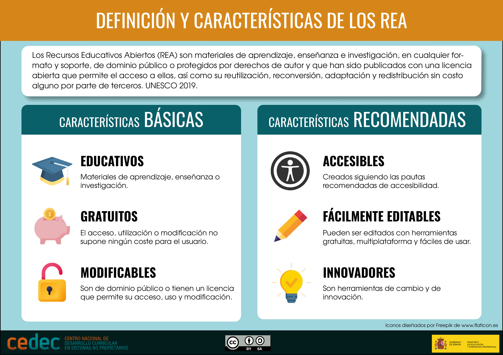
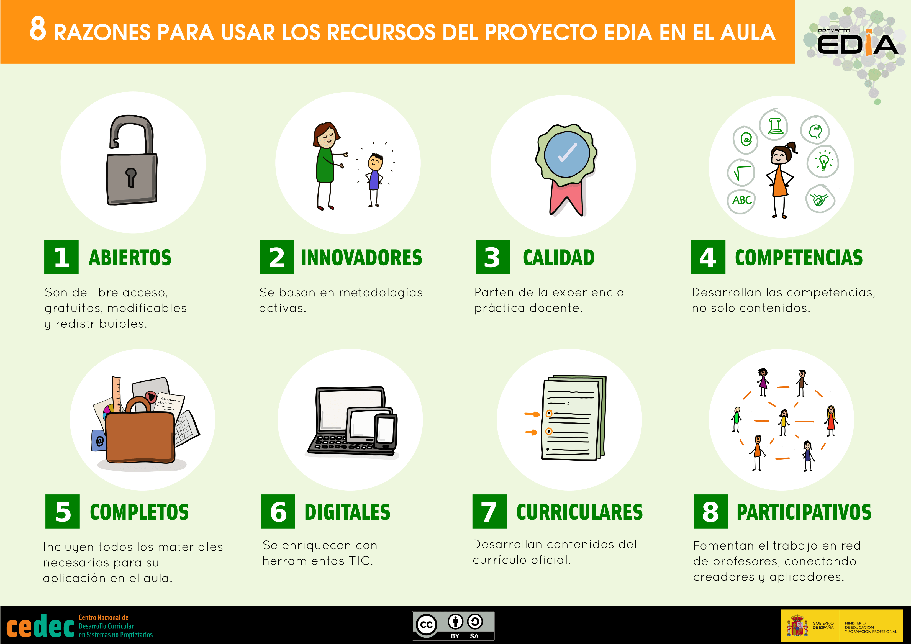

¿Qué son los REA?
Qué son los REA
El término recurso educativo abierto (REA) designa a materiales de aprendizaje, enseñanza e investigación, en cualquier formato y soporte, de dominio público o protegidos por derechos de autor y que han sido publicados con una licencia abierta que permite el acceso a ellos, así como su reutilización, reconversión, adaptación y redistribución sin costo alguno por parte de terceros (UNESCO, 2019). Para comprender mejor este concepto aconsejamos la visualización del siguiente vídeo en el que se aborda el tema de manera sencilla:
La diferencia fundamental, por tanto, entre un REA y cualquier recurso disponible en la red es la licencia: los REA son contenidos de uso educativo que están en dominio público o que han sido publicados con licencia abierta que permite su reutilización, adaptación al aula, modificación y difusión en la comunidad educativa. En definitiva los REA implican material para difundir, motivar y generar una nueva cultura educativa basada en nuevos contenidos educativos. Son recursos que se ofrecen a docentes, familias, alumnado y a cualquier persona interesada en la educación ya que mediante su uso, modificación, difusión y mejora podemos adaptar el contenido de nuestra materia y contexto, mediante el uso de las Tecnologías de la Información y de la Comunicación.
Pregunta Verdadero-Falso
Retroalimentación
Falso
Cualquier material digital o no puede ser un REA siempre y cuando cumpla las condiciones de liencia abierta.
Retroalimentación
Verdadero
Esta característica puede diferenciar un REA de otro material publicado por ejemplo en las redes.
Retroalimentación
Falso
Cualquier material diseñado para la enseñanza y el aprendizaje puede ser un REA como, por ejemplo, una imagen, un texto, un audio, una canción, etc.
Infografía sobre los REA
A continuación ofrecemos varios recursos que nos permitirán profundizar un poco más en las características de los REA.
¿Qué son los REA?

Cedec. Qué son los REA (CC BY-SA)
Los REA incluyen:
- Contenidos de aprendizaje: Cursos completos, materiales para cursos, módulos, contenidos, secuencias didácticas, etc.
- Herramientas: Software para la creación, entrega, uso y mejora del contenido de aprendizaje abierto, incluyendo búsqueda y organización de contenido, sistemas de gestión del aprendizaje (LMS), herramientas de desarrollo de contenidos y comunidades de aprendizaje en línea.
- Licencias abiertas. Licencias de derechos de autor que promuevan la publicación abierta de materiales, principios de diseño y adaptación local de contenido.
Los REA del Proyecto EDIA
Razones para usar los REA del Proyecto EDIA
CEDEC. Infografía 8 Razones para usar los recursos del Proyecto EDIA en las aulas (CC BY-SA)
{kind=link}
Información sobre el Proyecto EDIA:
- 8 razones para usar los recursos EDIA en el aula
- Ventajas de los grupos de trabajo y redes docentes EDIA. Educación Abierta en las aulas.
Los REA y la Educación Abierta
Los Recursos Educativos Abiertos han sido considerados como la "punta de lanza de la Educación Abierta", entendida como una educación accesible para todos y todas que permite además la participación activa de todos los colectivos, por lo que se amplía el campo de acción desde la educación formal a la educación no formal, abarcando todas las etapas vitales de los individuos y siendo, en definitiva, educación para toda la vida.
Un hito en los inicios formales del concepto “Educación Abierta” fue la Declaración de Ciudad del Cabo de 2008, resultado de la reunión organizada en Sudáfrica en 2007 por el Instituto Open Society y la Fundación Shuttleworth. Los participantes identificaron ideas claves y planificaron estrategias para desarrollar la Educación Abierta.
El concepto de Educación Abierta promueve la participación activa de instituciones, docentes y estudiantes para adherirse al movimiento y hacer disponibles en línea recursos didácticos de calidad, accesibles para todos y todas, con independencia del nivel de ingresos o la ubicación geográfica. En consecuencia, es una apuesta por un desarrollo sostenible en educación, fomentando la equidad educativa en todos los niveles.
En junio de 2012 tuvo lugar en la sede de la UNESCO en París el I Congreso Mundial de Recursos Educativos Abiertos cuyo fruto fue la Declaración de París sobre Recursos Educativos Abiertos (REA) que hace un llamamiento a los gobiernos para invertir en este tipo de recursos que garantizan el acceso universal a la educación de calidad.
El II Congreso Mundial sobre REA tuvo lugar en Liubliana en 2017, ofreciendo un Plan de Acción sobre los REA para respaldar una educación de calidad que sea equitativa, inclusiva, abierta y participativa. El Plan de Acción materializa el objetivo número cuatro de la Agenda 2030 para el Desarrollo Sostenible de las Naciones Unidas (2015), que insta a la comunidad internacional a “garantizar una educación inclusiva y equitativa de calidad y promover oportunidades de aprendizaje permanente para todos”.
A raíz de estos congresos y declaraciones oficiales, respaldadas por la UNESCO y gran cantidad de instituciones educativas, la bibliografía y webgrafía acerca de la Educación Abierta y los REA se ha multiplicado pero, en todos los casos, se hace referencia a la Declaración Universal de los Derechos Humanos que afirma que todo individuo posee derechos y libertades fundamentales, de los que forma parte el derecho a recibir y a difundir informaciones e ideas por cualquier medio de expresión y sin limitación de fronteras (artículo 19), así como el derecho a la educación (artículo 26).
En conclusión, los REA pueden ser considerados la punta de lanza de la Educación Abierta.
HITOS
- Declaración de Ciudad del Cabo de 2008 (Sudáfrica, 2007).
- Declaración de París sobre Recursos Educativos Abiertos (REA) I Congreso Mundial de Recursos Educativos Abiertos de la UNESCO (París, 2012).
- Plan de Acción sobre los Recursos Educativos Abiertos . II Congreso Mundial sobre REA de la UNESCO (Liubliana, 2017).
Pregunta Verdadero-Falso
Retroalimentación
Falso
Son materiales diseñados para la enseñanza y el aprendizaje por lo que los puede realizar cualquier persona (familias, docentes, alumnado) o institución.
Retroalimentación
Verdadero
Por eso los REA son un instrumento eficaz de la Educación Abierta.
Retroalimentación
Falso
Los REA son accesibles, se diseñan para llegar al mayor número de personas posibles con independencia de sus características personales y capacidades.
Retroalimentación
Verdadero
Verdadero porque los REA se deben realizar con herramientas que permitan su duración en el tiempo, para optimizar su uso.
Obra publicada con Licencia Creative Commons Reconocimiento Compartir igual 4.0